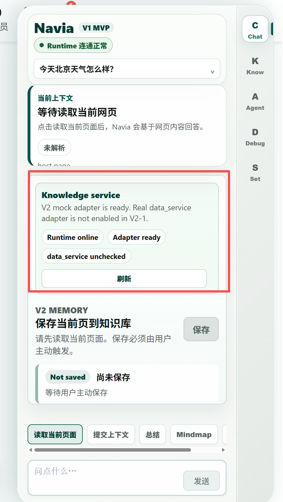
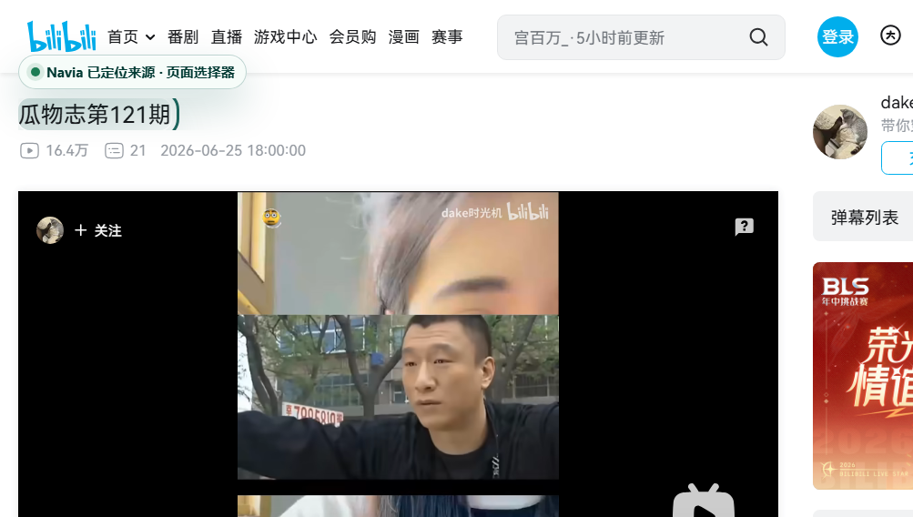

Know 区仍显示 Mock/unchecked

这只能证明容器存在，不能证明真实知识服务、Query、Graph 或 Forget 已实现。
V3 聚焦 Chat 与 Know：用户手动启动本机服务，在 Chat 理解当前网页或 B站视频，确认知识草稿后保存，在 Know 中真实管理。原媒体、视觉、Outline、TaskStore 与验收计划全部保留，Agent 不参与本阶段。

这只能证明容器存在，不能证明真实知识服务、Query、Graph 或 Forget 已实现。

字幕、SenseVoice、可信 tabCapture 和时间反跳仍保留；它们是 MediaPortalAdapter 能力，而不是新的一级产品域。
Chat / Know / Agent / Debug / Set 并列；媒体工作区独立；Runtime 启动目标反复变化。
Chat / Know 为一级；Settings 辅助；Agent 为 V5+；Runtime 明确由用户手动启动。
点击左侧 Chat / Know 与右上设置按钮。Chat 可模拟读取、提取草稿和保存；Know 可查看保存结果；设置可模拟 Runtime 在线/离线。
分析只读取当前页面或当前视频；不会扫描其他标签页，也不会自动保存。
从 Chat 的 KnowledgeDraft 经用户确认后保存。这里可编辑标签、自定义字段、优先级和人工生命周期状态。
启动权威是桌面图标。扩展不会自动启动 Runtime，也不会要求服务随浏览器关闭。
站点权限：B站已授权
ASR：SenseVoice baseline · 已安装
预计内存：按当前模型显示真实值
知识存储：本地可用
绿色/蓝色节点展示当前目标实体；标记明确区分已部分实现、需修改、待新增和远期。架构图已通过 showcase 级结构与连线校验。
手动 Runtime、网页/B站识读、知识草稿、真实本地管理。
Query、Graph、记忆、自动老化维护、Durable Forget、ASR 质量回退。
长短任务、多 Agent、受治理工具与知识驱动文档输出。
YouTube、小红书等独立 adapter、权限、样本和验收。